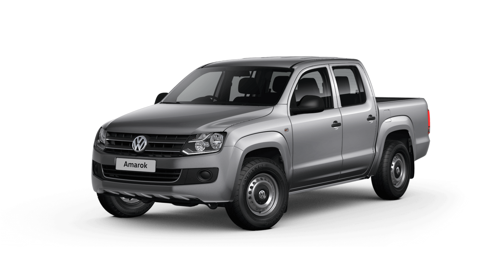
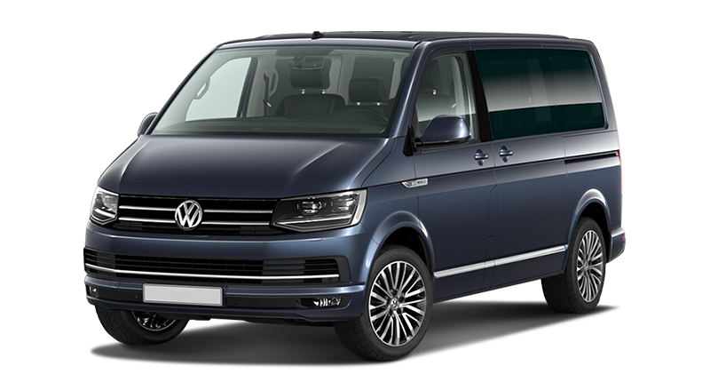
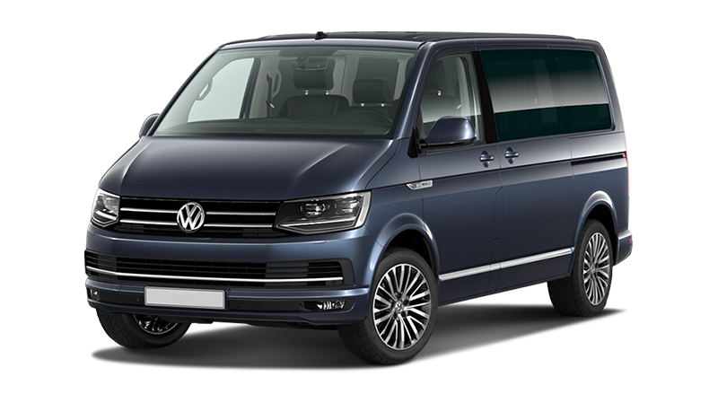

Впервые Volkswagen Amarok был представлен в 2009 году на международном салоне грузовиков в Ганновере под именем Volkswagen Pickup Concept.
Серийное производство наладили с осени 2009 года на заводе Pacheco в аргентинском Буэнос-Айресе,
так как именно Южная Америка (наряду с Африкой и Австралией) стали основным рынком сбыта данного пикапа. Название модели «Amarok» было взято из языка иннуитов, которые проживают в Гренландии и на Чукотке,
и переводится как «степной волк»
Amarok разработан абсолютно с нуля. Автомобиль имеет внушительные размеры, его длина составляет 5254 мм, ширина — 1944/1954 мм, а высота — 1834 мм.
По грузовым возможностям данному пикапу нет равных в классе. На борт он может поднять от 950 кг до 1,2 тонн груза. А в исполнении Heavy Duty может взять более тонны и тянуть прицеп массой до 2,8 тонн.
Первоначально покупателям предложили 5-местную модификацию с «двойной» кабиной (double cab). В дальнейшем планируется представить версию с одинарной кабиной.
Под капотом у Volkswagen Amarok Double Cab (версии Base и Trendline) — 2-литровый четырехцилиндровый дизельный двигатель мощностью 90 кВт/122 л.с.
Его отличительной особенностью является турбонагнетатель с изменяемой геометрией турбины. При частоте вращения от 2000 об/мин компактный двухлитровый мотор развивает крутящий момент 340 Нм.
Такой пикап расходует около 7,5 л топлива на 100 км. Комплектуется такой мотор с 6-ступенчатой механической трансмиссией и приводом на передние колеса.
В топовой комплектации владелец авто получает 2-литровый турбодизель с системой непосредственного впрыска Common-Rail оснащен регулируемым двойным турбонаддувом,
позволяющим уже при 1500 об/мин достигать максимального крутящего момента 400 Нм. Средний расход топлива составляет всего 7,6 л на 100 км у заднеприводной версии.

Если изучать историю создания данной модели, то можно смело утверждать, что она началась задолго до того, как мир первый раз увидел автомобиль под названием Мultivan. Днём рождения коммерческих автомобилей серии Т концерна Volkswagen, к каким без сомнений относится и Multivan, принято считать 8 марта 1950 года. Первоначально автомобиль получил название Transporter или Т1, а спустя 13 лет появился Transporter Kombi или VW Bus, который и стал прародителем нынешнего Multivan.
В 1968 году в свет выходит второе поколение коммерческих автомобилей. Создателем Т2 был конструктор Густав Майер. Это поколение выпускалось до 1979 года и разошлось по миру в количестве 2,93 млн экземпляров.
На смену Т2 в 1980 году приходит третье поколение микроавтобусов. Оно сохранило в себе концепцию прежних поколений.
А вот принципиально новые замыслы конструкторов Volkswagen нашли своё воплощение только в четвёртом поколении коммерческих минивэнов в 1990 году. Новое поколение отличалось новаторским дизайном, несущим кузовом, передним приводом и поперечным расположением двигателя.
С 1996 года на базе модели Caravelle был создан комфортабельный Multivan. Т4 сходили с конвейера до 2002 года. К этому времени за 53 года истории модельного ряда было выпущено 8,5 млн автомобилей.
Затем наступила эра Volkswagen T5.
Гамма двигателей Multivan пятого поколения предлагает на выбор: 2,5 л турбодизель мощностью 174 л.с. Максимальная скорость 188 км/ час, средний расход топлива 12 л на 100 км. Два бензиновых двигателя: 2 л / 115 л.с. и 3,2 л / 230 л.с., его максимальная скорость 205 км/час, с места до «сотни» 10,9 с и ещё один турбодизель объемом 1,9 л и мощностью 104 л.с. Он способен разогнать более чем двухтонный Multivan до 159 км/ час. Разгон до 100 км/час занимает 18,4 с. Расход топлива около 8 л на 100 км.
